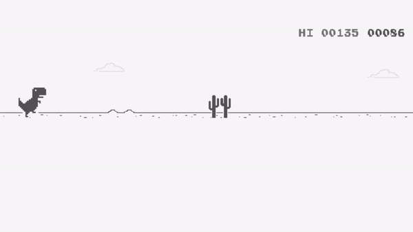

(Fecha: 01/02/23)
En esta clase aprendi que es HTML y para que funciona.
HTML Wikipedia

(Fecha: 02/02/23)
En esta clase nos tuvimos que meter a una cuanta github y aprendi como subir archivos a este.
(Fecha: 08/02/23)
En esta clase aprendí como adornar un sitio web con puras etiquetas de HTML, pero en medio de la clase se fue el internet y por eso apenas estoy escribiendo esto a las 11 de la noche jaja.
(Fecha: 09/02/23)
En esta clase el maestro nos enseño algunas partes escenciales del lenguaje de CSS para que asi supieramos como mejorar visualmente nustra pagina web, como parrafo, colores, tamaños de las letras, encuadres, etc.
Wikipedia CSS

(Fecha: 13/02/23)
En esta clase tuvimos que hacerle mejoras al codigo de html y hacerlo un poco más sencillo, para que al usuario se le haga más agradable a la vista.
(Fecha: 15/02/23)
Este dia algunos compañeros precentaron su trabajo de HTML y CSS al profesor. Y posteriormente el maestro nos dio algunos consejos para mejorar de manera ya un poco más profecional nustra Bitacora y para que sea un poco más simple y sencilla para la vista de las demas personas
(Fecha: 20/02/23)
En esta clase el maestro nos pidio que hagamos un sistema de Log in en html, un formulario de registro en caso de que el usuario no tenga una cuenta iniciada y despues hacer un filtro de todos los estados del pais.
(Fecha: 22/02/23)
En esta clse tuvimos que conectar los codigos de login, registrar y recuperar contraseña a travez de un enlace entre los tres codigos, ademas tambien tuvimos que poner todos los estados y sus municipios en el codigo de registrer.
(Fecha: 23/02/23)
En esta clase el profe Gerardo nos platico de como sera el futuro proyecto que hariamos y ademas nos puso hacer un word con los pros y contras que contendria el proyecto.
(Fecha: 27/02/23)
En esta clase estubimos trbajando en el index de nuestro proyecto web, agregando un menu que tubiera productos de la cafeteria en el index.
(Fecha: 01/03/23)
Este dia segui trabajando en el menu de mi proyecto web e intente agregar imagentes pero eso hacia que se viera feo y asi decidi mejor quitarlo.